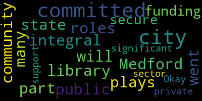

[Petrella]: Hello, everyone, and welcome to your show, Medford Happenings. I am John Petrella, and this is a show for and about the city of Medford. The purpose of this program is to give Medford citizens facts and information to help you make informed decisions. Today, we have a special guest. Barbara Kerr, director of the Charlotte and William Bloomberg Method Public Library. But before we begin our conversation with Barbara, I want to share two short clips. The first is an animation about the new library, and the second is folks speaking about it. So let's take a look at those videos.
[SPEAKER_03]: City of Medford is a city with a rich history and an exciting future. So it's a city on the move. It is a great place to live. I've grown up here and been here my whole life. And very soon, we're going to have a brand new library.
[Caraviello]: The library plays so many roles in the city of Medford. And this will be an integral part of our community.
[SPEAKER_01]: We're a family of four kids, and we go to the library every day. To say hi to the librarians and to do story time or graphs. And to take out books. And to take out books.
[SPEAKER_03]: The library was old, and it was built in a time when architecture was not particularly inspired or beautiful.
[Kerr]: There were very few electrical outlets. So when computers came in, trying to find places to put them was a very complicated business. Anytime there was standing water on the roof, it rained inside the building. It wasn't actually leaking onto the books. They had to put out buckets.
[SPEAKER_03]: So it was in conversations with the Massachusetts Board of Library Commissioners, where they sort of said, you guys really need a new library.
[Caraviello]: So we went to the city and to the state to get public funding committed and we also committed to secure significant support from the private sector.
[SPEAKER_01]: And today we are so excited that Michael Bloomberg is gifting the city of Medford three million dollars for the completion of its new library.
[SPEAKER_06]: Growing up, the Medford Public Library was one of the most important places in town, and it played a big role in my family. This gift is a way to say thanks, and to help it keep bringing the gift of reading and learning to more families. My father treasured books. My mother joined one of the library's first reading groups, and she continued going to lectures and readings there for the rest of her life, and she lived to 102.
[SPEAKER_02]: Reading and learning was important to our parents. They wanted us to be readers. They wanted us to have that experience. And so the library was central to our lives.
[SPEAKER_06]: My sister and I borrowed a lot of books. Sometimes we even returned them on time.
[SPEAKER_03]: The new library is rising. All of the foundation work has been done. All of the steel frame is erected. It's going to be full of light. It's going to be bright and shiny and everything's going to be new. It will be sort of a core draw for the community, a place where there can be meetings, open forums, artistic performances in a city where we're short on all of those kinds of public places.
[SPEAKER_07]: It was a dream that was designed by so many for so long. With the help of the Bloombergs, it's going to be a center of pride for generations to come.
[SPEAKER_06]: It will mean a lot to me and to my sister to see our parents' names connected forever to a place that they cared deeply about.
[Petrella]: Barbara, we're back with Barbara. I have so many questions, Barbara. Let me begin by asking, what does the typical day look like for a library director?
[Kerr]: Well, first there's coffee. That's important. Of course. And then I check in with the custodian, the office manager, and my department heads to see what's going on. It's very rare that I have a day without at least one meeting, so a lot of meetings, because I'm the liaison with a lot of community groups. And then I have a lot of ongoing projects that are ongoing and then I sit there and dispense wise advice to everybody because they walk in and ask me questions and I give them answers. So it's interesting. And you know, the thing with public service is you never know what's going to happen. So no day is ever exactly the same as the next one.
[Petrella]: All right, so let me ask you now, what do you enjoy? What's the best part of your job? What do you enjoy most?
[Kerr]: What I liked for years was I really enjoyed being on the desk and interacting with the public, but now that I'm an administrator, I don't do that very often, because that was very nice, because you got to know people and you got to know what they were using in the library and what was working and what wasn't working. So I miss that. someday maybe once in a while they should just put me on the desk to keep because right now I don't know how things work a lot of the time and right when it comes to transferring phone calls sometimes I have to get help so But the the other thing that I like really very much and always have is ordering books. That's my favorite thing because That's a great it's a great fun thing to do and I We're a large enough library that we can purchase a lot of things. And so trying to figure out what's trendy and what isn't trendy, and what people are interested in and what they're not, and what things that are classics that we don't have anymore, things like that. So I enjoy that very much. I go into the book ordering platform and I kind of surf sometimes and look and think.
[Petrella]: What are the challenges, I mean, with the libraries today?
[Kerr]: There's a lot of intellectual freedom challenges and book bans and things like that all over the country. That's been tough for the profession. But I think one of the things that is hitting everybody is that since the pandemic, some of this like there's more of a demand for sort of social services okay in libraries in libraries yeah and that's In a way we've always done that to a certain degree because we've provided people with referrals to social services agencies when they needed them. But now libraries are actually offering some of them. So we have like citizenship classes and ESOL classes. And at one point the city's social worker was having office hours at the library. So that's the kind of thing that I think it's a post-pandemic development.
[Petrella]: Right, yeah. So you're actually getting people come and they can take a citizenship class at the library?
[Kerr]: Yeah, which is good. This is our second session of ESOL classes and that's good because there's a lot of demand for services and because we now have a facility that can accommodate a lot of different things at the same time. And we have rooms that people can use. It's good. So.
[Petrella]: Okay. Resources. To the public. What's available? I mean, I. Everything. I get in there occasionally. I can't believe what's available.
[Kerr]: It's all the traditional library stuff. So books and movies and music. But now we have two e-book platforms. We have one through our library network that's like bestsellers and things and another one that we fund separately that's kind of more independent presses and things. So basically you put your hold on the one for the network and we get things from the other one while you're waiting. That hoopla, which is the one that we pay for, also has video. And it has a lot of streaming BBC things, so a lot of the BBC mysteries and things you can get on there. And we have another platform called Canopy that's mostly independent films. But if you go long enough, some of the blockbusters get in there, too. And those are free. You just need to have a library card.
[Petrella]: Now, the next question is the rooms. I've been in there a few times. There's rooms all over the place. I did something with the veterans not long ago. They made blankets. The night we were there, I gotta say, it was a busy place. a very busy place.
[Kerr]: I think we have 14 rooms that people can book as opposed to the previous building where we had one that everybody shared so there was glitter all the time. Right. So right this minute we're in a little bit of a transition with people booking the rooms because we have a commercial product that we use to book the rooms. They're pretty much going out of business today and they didn't tell us until about three weeks ago so For the next month, you could only book a room during November, but we have a new system in the pipeline. So once that's up and running, I think I wrote it down, you can book a room. once a month or something. So, there are, there's a bunch of them. There are small meeting rooms. There's. Right.
[Petrella]: And there's some large ones.
[Kerr]: There's a really big one. And then there's one that seats about 15 people. Right. And there's the maker space. There's a tech lab. So, if you need to have a meeting, and also the smaller rooms people use during the day, you can book it for a two-hour walk if you want to study or something.
[Caraviello]: Okay.
[Kerr]: Or take a test. We had somebody who, they went on a job interview on Zoom in one of the rooms. In one of the rooms. Wow. And she came out afterwards and said, I got the job.
[Petrella]: So, that was great. So there's a large, large amount of variety going on and people are using them for all different reasons.
[Kerr]: And it's great because that was one of the things that was difficult in the old building because there wasn't a lot of public meeting space in the city.
[Petrella]: There isn't, that's correct.
[Kerr]: And we do so much of our own programming that trying to make available space for other groups was, could be very problematic. But now it's, it's, it's complicated and having the booking systems die didn't help, but.
[Petrella]: Right, no, because my, yeah, the Mystic Players, the revival, I know they booked quite a few things up there. So, to book it, it's a phone call, it's online.
[Kerr]: It's a phone, there is an online form under normal circumstances you can call. And there's also a form now, but I think the form may not be available temporarily because we're only booking for November. But there are some, I think we book them in, I wrote it down, but I don't know where I wrote it down. Okay, so you can you can book a room like if you're an organization you can book it once a month Okay, you want to yeah, and we do the bookings quarterly because all of our programming and scheduling is quarterly. So We open once we get all our stuff and then we open up the booking to people who want to do it So and we think that the new system we're going to be adding will let people book the spaces themselves, probably just for the small study rooms.
[Petrella]: But still, that's nice.
[Kerr]: That's good, because we've had this product for a long time, but they just kind of were like, sorry, we're basically going out of business at the end of October.
[Petrella]: Right, yeah. Special events, I know there's so many up there. I do look at the calendar every month, and I mean, every day is... We have a crazy amount of programming.
[Kerr]: It's unbelievable.
[Petrella]: I mean, is there any... I know there's always something going on up there, and they seem to be well attended.
[Kerr]: They are, generally.
[Petrella]: Anything in particular? I mean, there's so many. It's incredible.
[Kerr]: One of the things, we always try and have sort of literary programs. So, this is something that we've been doing since the spring, I think, is Vidya Sundaram is the poet laureate for the city. So, she's doing a poetry group. And it's, they read different poems and people read their poems. So, that's good. We also, we always do a lot of stuff National Poetry Month, which is April. but it's good to have, and we also have a lot of authors and things, so this is a good program. And one of the other things, now that we have a larger room, we try and do some exercise things. So, this is for, this is not for seniors. This is for all ages, I think adults. There's also a mother and baby yoga class, which, where they turn the lights off, which is fine, except if you look down the hallway, it's a little creepy, because it's like the lights are off, and people are rolling around on the floor. But it's, this building allows us to do a lot of different things. So, it's good. And the maker space is a magic thing. That's something that we specifically wanted in this building, because before we built this building, the maker movement, people didn't want to just go to a lecture anymore. They wanted to make something. So it's basically a public workshop. So it's a room with a cement floor and really sturdy tables with a lot of art and craft supplies. So we do a lot of programming. where we'll do something like, I think there's a couple of pages here, stained glass or sewing or something. And there's a group called the Mystic Makerspace. And they do programs for us several times a month. And we got a Cummings grant this year that's going to allow us to hire two people to run makerspace programming. So programs that people can attend. But also, the other idea with the makerspace is that it's a, that's what this is about is, drop in is that you can come in and use it. You have to take like a safety class and specific classes on how to use the sewing machines and things, and you get a badge. And then after that, you can book the space if you need to make curtains or something. Wow.
[Petrella]: That's pretty nice.
[Kerr]: Yeah, that's a great thing. And it's like every program we have is full. Well, that's awesome. That's great. It's one of the things that because we started with a new building, we were able to put it in because I think there's a lot of other places who are being renovated and things where the maker space is like a closet.
[Petrella]: Yeah, no, but I've been in the library. You walk by it, there's always something going on in that room. Yeah, it's very impressive. Always something going on.
[Kerr]: My staff has not managed to light it on fire yet, even though they've threatened.
[Petrella]: And that's for adults only.
[Kerr]: Yeah, because there's a lot of power tools and things that aren't great.
[Petrella]: Yep, sounds good.
[Kerr]: So anybody who's interested, our new Makerspace staff are starting next week, so we'll be offering more stuff going forward. Just in time. Because the Cummings Foundation and East Cambridge Savings Bank were the big funders for that room. So Cummings wants us to keep it up, which is great. So it's a three-year grant program. We can do a lot of stuff. I think what's interesting is we've always had a really robust programming schedule because we have a very active Friends of the Library group. So they always funded programming, and now we have a foundation. They were founded to raise money for the new project, so they're also contributing to programs. This is our quarterly newsletter. This is the latest one. It's 20 pages of stuff, and if you're interested in having it come to your email, If you go on our website, which is www.medfordlibrary.org, and go into programs, there's a place you can go and click on newsletter. You can put your email in, and you'll get it quarterly, which is good, because there is so much stuff. It's a little bit crazy how much stuff we have. I have a young staff with a lot of energy. It's a good thing and it's a bad thing. So the good thing is, so coming up is, I was told to mention Teen Trivia Night, which is coming up. That sounds interesting. That's hilarious unless you're not a teen. Right. I was chaperoning once and sat in the corner and I didn't know any of the questions. No idea. That's a fun one. I'm doing, we've added 55 plus programs recently. Oh, okay. We put together a senior advisory board who are seniors, they come in once a month and Like propose ideas for programming. Okay, and so there's a whole page of them here and they asked me december 10th to do a It's a lunch and learn to do a history of the library, which I actually did a zoom history of the library in 2021, but This is going to be the short version the short version. That will be good. And then there's a bunch of 55 plus programs, which is great and then a huge amount of programming for children and teens, which is wonderful. So I was talking to the children's librarian yesterday, and there's a, there's something from birth till, I think children's is generally birth to sixth grade, and then above that is teen. So every week there's a, there's a baby lap sit, then there's a toddler program, then there's a family story time, which is for the slightly older group, and then They have something Lego Club and art smart which are for slightly older kids and they switch off week to week and They're great. They do crafts and one of my trustees goes to the story time on Saturdays and does the craft just to see what we're doing which is good and then the teens have then they're also book groups for different ages and Matt Heaton, who is a local musician, does a sing-along once a month that's standing room only. And they've been doing dance parties lately, like themed. They had a princess one. I missed the dinosaur one. I was sorry about that. And it's great, because there's They're very creative, and they keep on, it's like it's something new every time. It's not the same old tired story times. They come up with different things all the time. And the teens in particular were the place to go after school, which can be a little terrifying on early release days, but mostly it's great. And they like the place, and they go to the programs, The youth services people are really good. They really like children and teens. Well, that's great. Which is good. That's what it's all about. There's a ton of stuff, so I recommend if you're interested, arrange to get the newsletter. Because we do it in print, so we have print copies. How do you go about getting it, Barbara? You go on our website, and there's a program tab at the top. OK. And you scroll down there, and there's a thing that says newsletter.
[Petrella]: And you can sign up for that?
[Kerr]: Yep. Oh, OK. That sounds interesting. It goes to your email. And so we're very fortunate that we can do so much programming.
[Petrella]: Yeah. No, I mean, it seems really, really busy. There's constantly something going on between the rooms.
[Kerr]: We had 224,000 visitors in the last year.
[Petrella]: Wow. That's pretty good. Wow.
[Kerr]: I think we're a hit, which is good. Obviously.
[Petrella]: But that's a great thing. Yeah, it's good. It's a great thing.
[Kerr]: Because before this, we had a good staff and we had a good library, but the facility A lot of things we couldn't do because if you plug too many things in, you blew all the fuses. So that was what I was excited about when we were building the new building, was having a facility so that my staff could do what they're able to do without being impeded by the building. Because there was a famous crayon, melted crayon art program where they turned on three air-conditioned hair blowers, what do you call them, hair dryers at the same time and blew the fuses in the entire building. Now we have a lot of plugs and fuses and backups and We have a floor drain in the children's program room, which well, that's that's good. It comes in handy. Boy, there can be a lot of apparently there's a shaving cream. Yeah, program where that came in very handy. So it's great to have a facility that is lets my people do their best, because they're a very good group.
[Petrella]: You mentioned Friends of the Method Public Library, and I'm curious a little bit about them, but I mean volunteers. Do you have volunteers? Do people volunteer at the library? Yes. Are you always looking for volunteers? How does that work out?
[Kerr]: So you email Medford at minlib.net, which is M-I-N-L-I-B dot net. Because that's our Minutemen Library Network thing. And Sam, who is my assistant director, will get in touch. We have a lot of stuff. And then the youth, if they call the children's department, they have a lot of child, kid, and they have a lot of teen volunteers, because a lot of the teens have to do community service. And there's quite a few.
[Petrella]: Oh, so they can do community service there.
[Kerr]: Yeah, they just have to make arrangements with the teen librarian to find something to do. But it's good.
[Petrella]: It's very active. Yeah. Well, you know, you do a great job there. Thank you. I mean, we could probably go on and talk for another two or three hours, I guess, but I can tell you the stories. Yeah, I'm sure you can. Yeah. Yeah, I'm sure you can. Well, I see we are getting near the end, so I want to thank our guest, Barbara Kerr, the director of the Charlotte and William Bloomberg Method Public Library, for sharing information about the services and the resources available at your public library. You will be able to see a replay of this show on Method Community Media. metfordtv.org, metfordlibrary, metfordlibrary.org, and YouTube, Metford Happenings. For more information about our future program, you can visit either the Method Community Media at methodtv.org or Method Community Network at mcn02155.com. For Method Happenings, I'm John Petrella, and stay informed.
|
total time: 0.23 minutes total words: 49  |
|||
{kind=link}